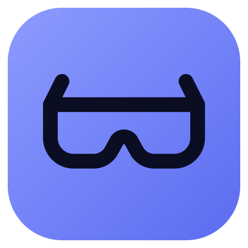

Side-by-Side VRPrivacy Policy
Last updated October 25, 2026
In short: Side-by-Side VR collects no data. There are no accounts, no analytics, no ads and no tracking, and nothing is sent to us. The app talks only to your glasses and to the websites you play videos from.
This policy covers the Side-by-Side VR for AR Glasses app for Mac and the Side-by-Side VR Safari extension that comes with it.
What stays on your Mac
- Settings: head-tracking calibration, zoom, motion prediction, controls depth and loop. Eye alignment is saved for each video, together with that video’s web address or file name (for the last 300 videos you adjusted).
- A diagnostic log, to help fix problems: when the app starts, which glasses display it found, and for videos played from the web the site and path of the video, the type and size of what the site sent, and whether a sign-in was used (only how many cookies, never what they contain). The log is kept under about 2 MB and older entries are deleted automatically. Open it with Help → Show Log; you can delete it at any time.
- Videos you open from your Mac are read only when you choose them, and the app can’t see your other files.
All of this lives in the app’s own private folder on your Mac. None of it is uploaded anywhere, and deleting the app deletes it.
Who the app talks to
- Your glasses, over the USB-C cable’s network link, to read their motion sensor and to switch them between 2D and 3D. This is why macOS may ask to let the app find devices on your local network.
- Video websites, but only the ones you play from. The app downloads the video straight from the site, as Safari would. The site sees an ordinary visit, and its own privacy policy applies.
- Web pages you paste a link to, to find the video on them. The page is loaded out of sight in a private, temporary session that keeps no cookies or history and plays muted.
The app also runs a small server that only your own Mac can reach (at 127.0.0.1), so its player and the Safari extension can talk to it. Other devices and websites can’t use it.
The Safari extension
- It looks at the pages you visit only to find videos and show a Play on Glasses button over them. It doesn’t record or send your browsing history or page contents.
- Only when you click Play on Glasses (or its toolbar button) does it pass anything on, and only to the Side-by-Side VR app on your Mac: the video’s address, the page’s address and title, where you are in the video, and the cookies Safari has for that site, so videos you’re signed in to play too.
- Those cookies are kept in memory only, for at most 12 hours, and are sent only to the site they belong to. They are never saved to disk and are gone when the app quits.
- Safari asks you which websites the extension may work on, and you can change that at any time in Safari → Settings → Websites.
Children
The app collects no information from anyone, including children.
Changes
If this policy changes, the new version will be posted on this page with a new date.
Contact
Questions about privacy: nullhypeothesis@gmail.com